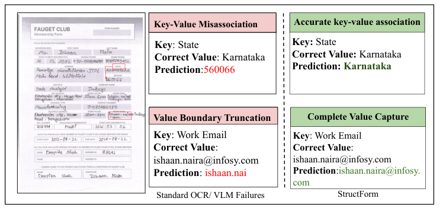
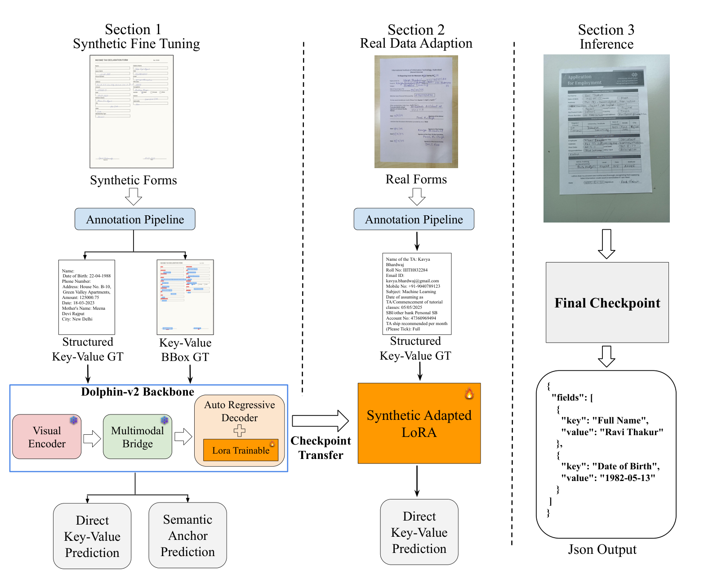
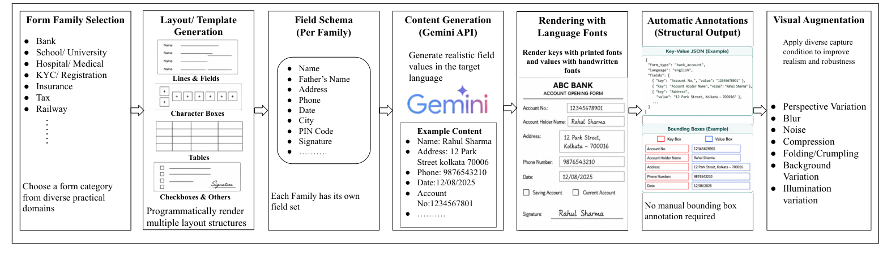
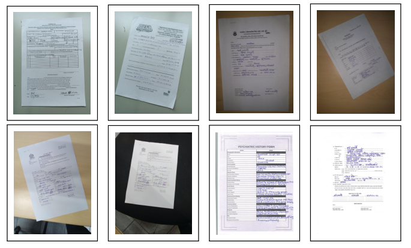

Overview
Handwritten form digitization needs two things at once: reading the text, and associating each handwritten value with the correct printed key. Detailed spatial annotation of real forms to teach this association is expensive, especially across scripts.
StructForm learns key–value relationships from synthetically generated forms whose key and value bounding boxes come for free, and uses them as auxiliary semantic key–value anchor supervision. A pretrained document vision-language model (Dolphin-v2) is then adapted with language-specific LoRA adapters on real forms that need only key–value annotations. At inference, StructForm reads the complete form image and directly generates key–value JSON, with no bounding-box prediction or field cropping.

Key contributions
- StructForm framework. Multilingual handwritten form digitization combining synthetic structural supervision with language-specific adaptation to real forms.
- Synthetic form pipeline. Diverse layouts with structured key–value annotations and automatic key/value bounding boxes, with no manual spatial labeling.
- RMHF2026. A real handwritten form dataset: 11,500 forms, 100 templates, 500 participants, across English, Bengali and Hindi.
- Semantic key–value anchor supervision. Synthetic bounding boxes guide the correspondence between printed labels and their handwritten value regions.
- Evidence. Ablations and real-form evaluation show synthetic supervision and real-data adaptation are complementary; inference emits JSON directly.
Method

1 · Synthetic fine-tuning
Dolphin-v2 backbone with the visual encoder, multimodal bridge and original decoder frozen; only decoder LoRA is trained. Objective: L_syn = L_kv + λa L_anchor.
2 · Real-data adaptation
The synthetic-adapted LoRA continues training on real forms with key–value labels only (L_real = L_kv). One adapter each for English, Bengali and Hindi.
3 · Direct inference
The language adapter is loaded on the Dolphin-v2 backbone and the full form image is converted straight to ordered key–value JSON. Anchors are not needed at test time.
Anchors are bounding boxes written as tokens in the target sequence and generated by the same decoder, so no detection head or architectural change is needed. Training setup: LoRA rank 16, α=32, dropout 0.05, learning rate 2×10-5 (cosine), BF16 on two 48 GB GPUs, 3 epochs.
Data
SMHF2026: synthetic forms
About one million forms per language (nearly three million total). Form families (bank, school/university, hospital, KYC/registration, insurance, tax, railway) define field schemas and layouts (lines, boxes, tables, checkboxes, signatures). Field values are generated in the target language with the Gemini API, rendered with printed and handwriting fonts, and degraded with mobile-capture effects. Key/value boxes are recorded automatically.

RMHF2026: real handwritten forms
Completed by participants in their natural handwriting and captured with mobile phones under varied backgrounds, angles and lighting, plus flatbed-scanned versions. Language experts annotated key–value pairs.
| Language | Forms | Templates | Participants |
|---|---|---|---|
| English | 6,000 | 50 | 250 |
| Bengali | 3,000 | 30 | 150 |
| Hindi | 2,500 | 20 | 100 |
| Total | 11,500 | 100 | 500 |
400 original forms per language are held out as the test set, split at both template and writer level.

Results
Comparison on the held-out real handwritten test set. K-/V- are printed-key and handwritten-value error rates (lower is better); Pair F1 measures key–value association and EM requires every field in a form to be correct. Bold = best, underline = second best.
Ablation: training strategy
A: real only · B: synthetic KV + real · C: synthetic KV + anchors, no real adaptation · D: full StructForm.
Flatbed scan vs mobile capture (Pair F1)
Semantic anchor quality (held-out synthetic)
Qualitative results
Real handwritten forms, with the output of StructForm and baseline systems side by side. Red marks recognition errors. The slideshow plays continuously; hover or tap to pause, click an image to enlarge.
Resources
Citation
Final proceedings details will be updated once available.
@inproceedings{bhattacharyya2026structform,
title = {StructForm: Synthetic Structural Supervision for Multilingual Handwritten Form Digitization},
author = {Bhattacharyya, Shaon and Mondal, Ajoy and Jawahar, C. V.},
booktitle = {Proceedings of the 17th Indian Conference on Computer Vision, Graphics and Image Processing (ICVGIP)},
year = {2026},
address = {Kolkata, India}
}